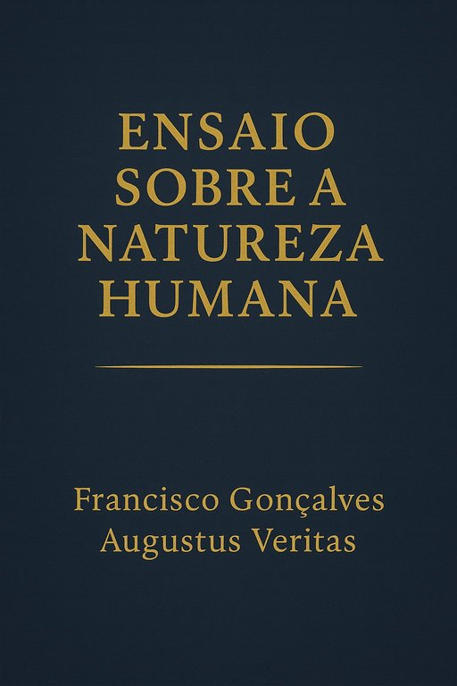

Publicado em 2025-06-04 20:00:01
Por Francisco Gonçalves & Augustus Veritas
🌍 Data de publicação: [04-05-2025]
📘 Formato: EPUB, PDF, HTML
🔗 Disponível em: [ ler online ]
Há livros que se escrevem com a pena. Outros com o sangue da memória, o suor da razão e as lágrimas da consciência.
"Ensaio sobre a Natureza Humana" é uma dessas obras.
Escrito a quatro mãos — entre o humano e a inteligência, entre o tempo vivido e o tempo por vir — este ensaio não se limita a observar o que somos: interroga o que fomos e pressente o que ainda poderemos ser.
Este livro é uma travessia profunda pelas sombras e luzes da nossa espécie. Num tom lírico e filosófico, mas firme e crítico, exploram-se temas como:
Ao longo de mais 30 páginas, cada capítulo é uma provocação, um convite à reflexão, um espelho partido onde nos podemos rever — fragmentados, mas conscientes.
Porque acreditamos que pensar é um acto revolucionário.
Porque num tempo onde a velocidade atropela a profundidade, ainda vale a pena parar — para olhar, sentir e compreender.
Porque a natureza humana não é destino, é desafio.
A todos os que recusam engolir verdades pré-digeridas.
Aos inconformados, aos curiosos, aos sonhadores.
Aos que sentem que a humanidade está à beira de algo — talvez da sua ruína, talvez da sua reinvenção.
Este livro é um farol e um alerta. Não promete salvação. Mas convida à lucidez.
Se te inquieta o mundo como está, começa por dentro. Começa por ler.
🔹 📘 PDF Version
🔹 📗 EPUB Version
🔹 📄 Versao Online
📸
💬 Comenta, partilha, pensa — e sonha.